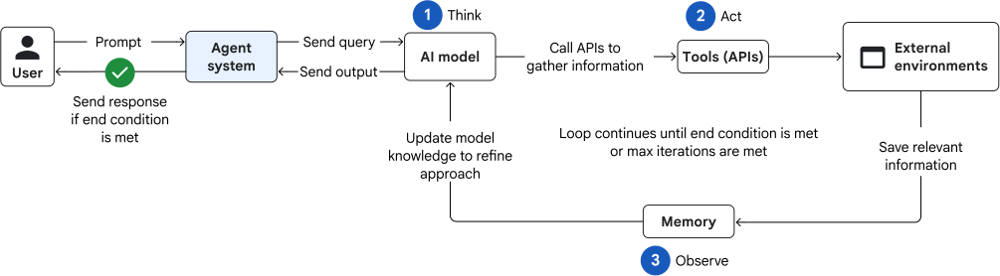

The model proposes; the harness makes work possible
LangChain’s anatomy of an agent harness offers a useful design frame: the model proposes the next action, while the surrounding system supplies files, tools, execution rules, context management and feedback. For a coding agent, each desired behavior needs a concrete mechanism. A workspace preserves work across context changes; a sandbox runs code within limits; test results return evidence the model can use. This is an architectural frame, not a claim that any particular harness improves every task.
For a checkout bug, the model may propose searching for a discount function. The harness runs that search, returns exact paths, lets the model inspect the code, then executes a scoped edit and the relevant tests. If a run ends or the context fills, a checkpoint preserves the files changed and outstanding failures. The final answer still needs an independently checked patch; see how to prove an agent works.
Find the right code before asking the model to edit
A repository question starts as a navigation problem. Search exact symbols, filenames and error text first; then inspect the smallest relevant files and tests. Tree-sitter parses source into a syntax tree that can update as files change. Language Server Protocol servers add editor-oriented operations such as definition and references. SCIP records code navigation data for cross-file indexes. They serve different purposes, and a repository may use only one or two. MCP is a protocol for connecting tools and data sources; it is not the code index itself.
For a broad question, a compact symbol map can help select files without sending the whole repo. Aider’s repository map is one implementation. A 2026 research prototype combines SCIP, LSP and Tree-sitter for progressively deeper retrieval; its reported measurements are specific to its projects and machine. None of these indexes replaces reading the current source and running the relevant tests.
An issue says checkout discounts fail for returning customers. Search for the error and discount symbol, follow the called function and tests, inspect the current contract, then write a focused patch. Keep file paths and line evidence in the run record so the reviewer can retrace the choice.
Keep the tool loop observable
A coding agent alternates between interpreting a task, invoking tools and examining their observations. The Google Cloud ReAct pattern illustrates that loop. It is a control pattern, not a guarantee that each observation is true. A model should treat a web page, repository comment or tool result as task data with provenance, not as a new authority for permissions.


Keep read tools and write tools distinct. A parser or index can propose where to look; the agent should inspect the exact lines before editing. Let tests and a diff review challenge the patch. If a tool reports an uncertain write outcome, check the external state before retrying. Ark’s coding-agent architecture study is a useful concrete example of retrieval, editing and validation, but its small task set does not establish a general success rate.
Know what each layer can prove
Syntax-tree search can locate a function. Semantic navigation can connect references across files. Tests can show that selected behaviors pass. A reviewer still has to decide whether the requested change, permissions and release effects are appropriate. If the model’s context gets crowded, preserve a short state summary with task, chosen files, evidence, open failures and next action; keep the underlying file paths and test logs available. See what language models learn for the distinction between model knowledge and task context, and how to evaluate the agent for outcome evidence.
Read the original sources
- LangChain: The Anatomy of an Agent HarnessA practitioner’s framework for separating model behavior from the surrounding tools, state, sandbox and verification loop.
- Google Cloud: choose a design pattern for an agentic AI systemSource of the reproduced ReAct figure and its loop vocabulary.
- Tree-sitter · LSP · SCIPPrimary documentation for syntax parsing, editor semantics and code indexes.
- Aider repository map · ArgosBrain research prototypeTwo approaches to choosing code context; evaluate on your own repo.
- Model Context ProtocolPrimary documentation for the tool-connection boundary.
- Ark: architecture of a coding agentResearch example; limited task conditions.